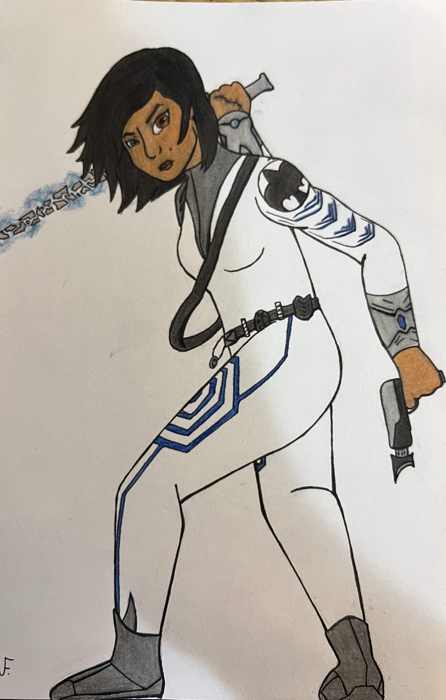
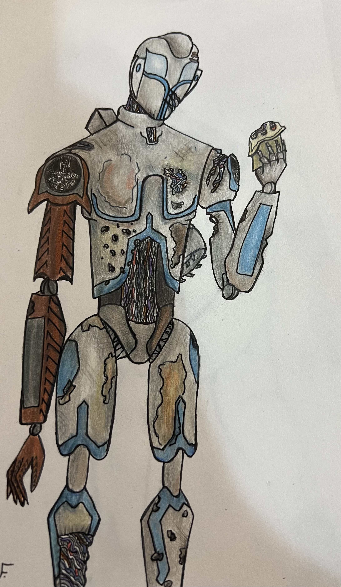
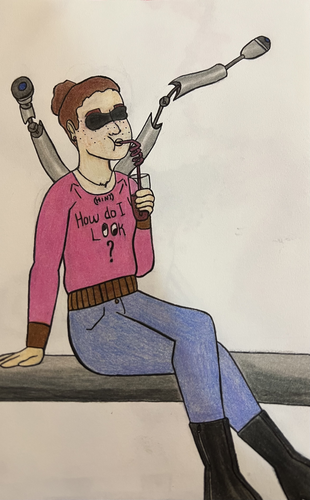
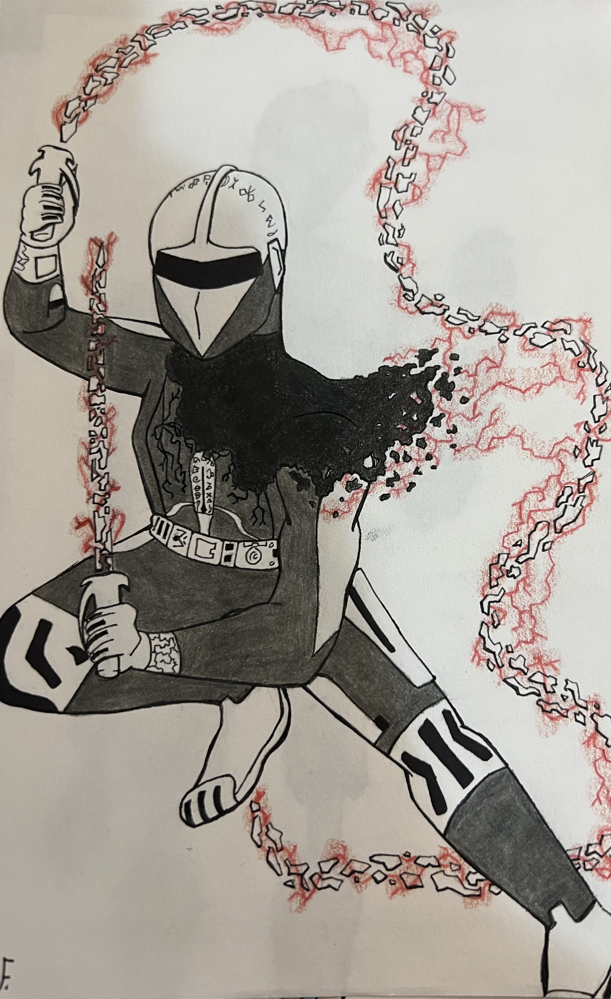

Characters
One of the things we're most proud of when it comes to Fragment are the characters that we've created. Most have had their bios written, personalities chosen, and serve some importance to the story. While we have a lot of characters that we want to share with you, we've chosen a select few to show off. We've decided to reveal these characters by showing off the concept art that was made by artist Mary Francis. We do still plan to show off other character concept arts and even begin to show environmental drawings, but for now, we hope you enjoy the ones that we've chosen.

Grace Summit
Grace is the main protagonist of the Fragment series. Enlisting at 16, Grace has demonstrated considerable skill in hand-to-hand combat and marksmanship. She has lost much to the enemies of humanity, but will not give up on her skills or her allies.

ZK-33 (Zeke)
Zeke is an experimental robot designed to be a doctor. Programmed to protect the facility's personnel, Zeke enjoyed his job. Unfortunately, the planet that Zeke lived on has become an apocalyptic hellscape. With most of his coworkers dead, Zeke searches the planet for survivors, intending to care for them.

Winter Ecken
Winter is the pilot of the Forager, a decommissioned transport ship. While she’s more optimistic than most she encounters, Winter has had her share of hurt and pain. She lost her eyes when she was a child and requires cybernetic implants to allow her to see. Now she works to afford the chance to regain sight in her eyes.

Reapmaster Indra
For every hero, there's a villain. Reapmaster Indra is that villain. A killer at heart, Reapmaster commands the Reap Cycle, a galaxy-wide space armada. She views humanity and the other alien races as potential candidates to join the Reap Cycle. With her army and weapons, she will stop at nothing before all who oppose her are nothing but dust.